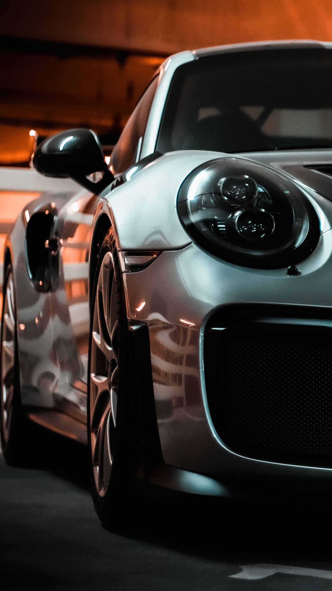

Porsche 911: “901”den Hibrite Altmış Yıllık Yol
Porsche 911’in adı başta 911 değildi. Stuttgart’taki fabrika 1963 sonbaharında arabayı Frankfurt’ta “901” diye sergiledi, bir yıl sonra satışa çıkarırken adını değiştirmek zorunda kaldı. Gerekçe bir Fransız rakibin itirazıydı. Altmış yılı aşkın bir süre sonra aynı model hâlâ üretiliyor. Arkada motor, altı silindir ve arkaya doğru inen çatı çizgisi gibi ilk günkü kararların çoğunu taşıyor, ama arada motoru, şasisi ve gövdesi defalarca yenilendi. Bu yazı o yolu kaynaklarıyla izliyor. Hangi rakam hangi kaynaktan geliyor, nerede iki kaynak birbirini tutmuyor, hepsini sonunda ayrıca topladım.

Önce bir sözlük: yazıda geçen teknik kısaltmalar
Yazıda sık geçecek birkaç terimi baştan açıyorum, çünkü motor haberlerinde bunlar açıklanmadan geçilir.
- PS (Almanca Pferdestärke, “at gücü”): Avrupa’da kullanılan metrik beygir gücü. Bir PS yaklaşık 0,986 hp eder. hp ise İngilizce horsepower, yani İngiliz sistemindeki at gücü. Aradaki fark küçük, ama kaynaklar farklı birim kullanınca rakamlar tutmuyor gibi görünüyor.
- kW (kilovat): gücün bilimsel birimi. 1 kW yaklaşık 1,36 PS eder.
- Nm (newton metre): motorun tekerleğe uyguladığı döndürme gücü, yani tork.
- Boxer (yatık karşılıklı motor): silindirlerin iki yana yatay biçimde karşılıklı dizildiği, pistonların birbirine yumruk atar gibi hareket ettiği motor tipi. 911’de altı silindirli bir boxer var, buna “flat-six” de deniyor.
- Hava soğutmalı / su soğutmalı: motoru soğutan ortam. Hava soğutmalı motorda ısıyı kanatçıklar ve bir fan havaya atar. Su soğutmalıda radyatörlü bir sıvı devresi kullanılır.
- Turbo: egzoz gazıyla dönen bir çark, motora daha fazla hava basar. Aynı motordan daha çok güç alınır.
- PDK (Almanca Porsche Doppelkupplungsgetriebe): iki kavramalı otomatik şanzıman. Vites değişimleri çok hızlıdır.
- Hibrit: yakıtla çalışan motora elektrik motoru ve batarya eklenmiş sistem.
Önce bir 356 vardı
911’in selefi Porsche’nin ilk kendi markalı seri otomobili olan 356’ydı. Porsche’nin kendi tarihçesine göre 911 projesi bu arabayı değiştirmek için doğdu. Tasarım işi bir aile meselesiydi: şirketin kurucusu Ferdinand Porsche’nin torunu, Ferry Porsche’nin oğlu F. A. Porsche 1959’da çizimleri yaptı, 1960’ta “Tip 754” adıyla bir prototip ortaya çıktı. Dört kişilik bir çalışmaydı, ama Ferry Porsche arabanın bir “fastback” olmasını, yani çatının arkaya doğru kesintisiz bir eğriyle inmesini istedi ve dört koltuk fikri bırakıldı. Dingil mesafesi, yani ön ve arka tekerlek arasındaki uzaklık, 2,40 metreden 2,20 metreye indirildi.
1962’de “Tip 901” üzerindeki çalışma başladı: iki koltuk ve arkada iki küçük koltuk, yani “2+2” bir fastback kupa. İlk prototip 9 Kasım 1962’de Zuffenhausen’deki fabrikadan çıktı. Bu arada bir tedarik sorunu vardı. Kaporta işini yapan Reutter şirketi yatırım yapmaya çekiniyordu. Porsche 1963 yazında bu şirketin pres tesisini ve yaklaşık bin çalışanını satın aldı.
Motor tamamen yeniydi: sekiz krank mili yatağı ve kuru karter yağlamasıyla (yağın ayrı bir depoda tutulduğu sistem) altı silindirli bir boxer. Hacmi 1.991 cc (santimetreküp), yani yaklaşık 2,0 litreydi. 6.200 devirde 130 beygir gücü üretiyordu ve sıkıştırma oranı 9:1’di. Sıkıştırma oranı, silindirdeki karışımın ne kadar sıkıştırıldığını gösteren orandır.
901’den 911’e
“901” Frankfurt Uluslararası Otomobil Fuarı’nda (Almanca kısaltmasıyla IAA) 12 Eylül 1963’te sergilendi. Porsche’nin tarihçesi bu araca “ön seri”, yani teknik özellikleri henüz kesinleşmemiş bir örnek diyor. Sektör profesyonellerine 1964 Mayıs’ında gösterildi. Seri üretim 14 Eylül 1964’te başladı.
Adın değişmesi birkaç hafta sonra oldu. Ekim 1964’ün başında Peugeot, “901” adının Fransa’daki marka haklarını ihlal ettiğini bildirdi. Porsche ortadaki sıfırı bir ile değiştirdi. Ferry Porsche değişikliği 22 Ekim 1964’te onayladı ve araç 911 oldu. Porsche’nin Newsroom sayfası, o gün üretilen üçüncü ve son aracın, 300 057 şasi numaralı kırmızı kupanın “Number 57” diye anıldığını yazıyor. Bu araç bugün Porsche Müzesi’nde duruyor.
İlk fiyat Almanya’da 21.900 Alman markıydı (DM). Porsche’nin teknik verilerine göre ilk 911’in gücü 130 PS, 0-100 km/s hızlanması 9,1 saniye, azami hızı 210 km/s idi. Bunu sonraki çağın rakamlarıyla birlikte aşağıdaki grafiğe koydum.
Güç nasıl tırmandı?
Gücün tarihine bakınca 911’in bir kuşaktan ötekine nasıl büyüdüğü görülüyor. 1966’da gelen 911 S 160 PS verdi. 1972’de Carrera RS 2.7 modeli 210 PS’ye ulaştı. Porsche’nin tarihçesine göre bu araç, seri üretimde arka kanat (“spoiler”) taşıyan ilk Porsche oldu. Kanatçık yüzünden “ördek kuyruğu”, yani “ducktail” lakabını aldı. 1.000 kilogramın altında bir ağırlığı vardı.
1974’te Paris Otomobil Fuarı’nda Turbo (tip 930) tanıtıldı. Porsche’nin turboşarjlı motorlu ilk seri üretim modeli buydu, gücü 260 PS idi. 1977’de Turbo 3.3 modeli 300 PS’ye çıktı. 964 neslinin Turbo’su 1992’de 360 PS’ye ulaştı. 2024’te tanıtılan Carrera GTS T-Hybrid’in toplam sistem gücü 541 PS (398 kW) oldu. 992 neslinin Turbo S’i ise 650 PS ile bugüne kadarki en güçlü seri 911 olarak anılıyor.
Nesiller, kodlar ve neden bu kadar kafa karıştırıyor?
911 meraklıları nesilleri kod adlarıyla anıyor ve ilk bakışta bu adlar tuhaf geliyor: G serisi, 964, 993, 996, 997, 991, 992. Bu sayılar Porsche’nin kendi iç proje kodları. Anlamlı bir sırayı izlemiyorlar, sadece her nesle bir etiket veriyorlar. Porsche Newsroom’un 2017 tarihli yazısından alınan bilgilerle durum şöyle:
- G serisi (1973/74-1989)İlk büyük yenileme. Anatole Lapine’in tasarımı olarak anılıyor. Turbo bu dönemde çıktı. Newsroom’a göre 198.414 adet üretildi.
- 964 (1988-1994)Parçalarının yaklaşık yüzde 85’i yeni. Dört tekerlekten çeker Carrera 4 ilk kez bu nesilde. 74.008 adet.
- 993 (1993-1998)Hava soğutmalı son 911. İlk çift turbolu (“biturbo”) motor bu nesilde. 67.535 adet.
- 996 (1997-2005)İlk su soğutmalı 911. Dört valfli silindir kapakları. Boxster modeliyle parça paylaşıyor. 179.163 adet.
- 997 (2004-2012)Carrera ve Carrera S’in 3,6 ve 3,8 litreli motorları. 215.092 adet (bu rakam kaynaklara göre değişiyor, aşağıda var).
- 991 (2011-2019)Çelik ve alüminyumdan karma gövde. 2015’te 3,0 litrelik çift turbo. Bir milyonuncu 911 Mayıs 2017’de bu nesilden çıktı.
- 992 (2018-)Newsroom sayfasına göre 2022’ye kadar 96.603 adet. En güçlü seri 911 olan Turbo S bu nesilden.
Grafikte dikkat çekici nokta, 993’ün üretim sayısının en düşük, 991’in en yüksek olması.
996: su soğutma kararı
996 nesli bir sınır çizdi. Porsche’nin kendi sayfasına göre 996, 1997 Frankfurt Fuarı’nda tanıtıldı ve 993’ten 185 milimetre daha uzun, tekerlekler arası 80 milimetre daha fazla, 30 milimetre daha genişti. Hava soğutmalı motorun yerini su soğutmalı bir motor aldı. Kaynaklarım bunun nedenini açıklamıyor, çıkan sonuç olarak yalnızca yeni motorun dört valfli silindir kapaklarıyla geldiğini ve Boxster ile parça paylaştığını söylüyor.
Burada kendi genel bilgimi ekleyeceğim ve bunun doğrulanmadığını belirtiyorum: Bazı meraklıların bu nesilde ön far biçimine ve hava soğutmalı motorun bırakılmasına tepki gösterdiğini duydum. Bu bölümü kaynakla doğrulamadım.
Yarış pistinden gelen itibar
911’in itibarı gündelik yolda değil, yarışlarda kuruldu. Porsche’nin tarihçesine göre 911 1968, 1969 ve 1970’te Monte Carlo Rallisi’ni üst üste üç kez kazandı. Bahar 1973’te Carrera RSR 2.8 Daytona 24 Saati’ni kazandı. 1974’te Carrera RSR Turbo 2.1 Le Mans 24 Saati’nde ikinci oldu. Daha yakın tarihe bakınca 997 GT3 RSR 2009’da FIA GT şampiyonasında kendi sınıfını (GT2) kazandı. 991 RSR ise 2018-19 FIA Dünya Dayanıklılık Şampiyonası’nda GTE sürücüler sınıfında bire-iki yaptı. FIA, Uluslararası Otomobil Federasyonu’nun kısaltması. GT2, GT3 ve GTE yarış sınıflarının adı. Bu sınıfların ayrıntılı kurallarına bakmadım.
Hibrit 911: 2024
28 Mayıs 2024’te Porsche, 911 Carrera GTS T-Hybrid’i tanıttı. Şirketin sayfasına göre toplam sistem gücü 541 PS (398 kW), tork 610 Nm. Boxer motor tek başına 485 PS (357 kW) ve 570 Nm verir. Sistemin en ilginç parçası, “elektrikli egzoz gazı turbosarjı”. Turbonun içine bir elektrik motoru yerleştirilmiş. Bu motor turbonun çarkını hemen döndürüp basıncı çabuk yükseltiyor, ayrıca egzoz gazı akışından 11 kW (15 PS) kadar elektrik üretebiliyor. Önceki çift turbo yerine tek turbo kullanılmış ve turboda “wastegate” (fazla gazı kaçıran vana) yok.
Batarya 400 voltluk, brüt 1,9 kWh depoluyor. Karşılaştırma için, tam elektrikli otomobillerin bataryaları genelde onlarca kWh’tir (bu benim genel bilgim, kaynakta yok). Bu sistem bir elektrikli araç gibi yol almak için değil, motora destek vermek için tasarlanmış. Porsche, hibrit sistemin eski modele göre yalnızca 50 kilogram eklediğini söylüyor. Coupé versiyonu 0-100 km/s’yi 3,0 saniyede yapıyor. ABD’de fiyatı için bulduğum bir haber başlığı 166.895 dolar ve 532 hp diyor. 541 PS yaklaşık 533 hp ettiği için bu iki rakam çelişmiyor, birim farkı.
912: aynı gövde, daha ucuz motor
İlk yılların bir ayrıntısı, 911’in tek başına satılmamış olması. Porsche Newsroom’a göre 1965’te dört silindirli bir kardeş model çıktı: 912. Gövde aynıydı, motor 356’dan gelen daha küçük bir dört silindirliydi. 911’in satışa çıktığı ilk yıllarda iki model birlikte üretildi. Newsroom, 1973 mali yılında 81.100 adet 911 ile 30.895 adet 912 üretildiğini yazıyor. Hesabıma göre o yıl bu iki modelden üretilenlerin yaklaşık yüzde 72’si 911, yüzde 28’i 912’ydi (81.100 bölü 111.995).
1965 sonbaharı iki yeniliği de getirdi. Targa, yani çatısı sökülebilen ve arkasında paslanmaz çelikten bir devrilme koruma çubuğu bulunan sürüm, o sonbahar tanıtıldı. Porsche’nin kendi sayfasına göre ünlü Fuchs jantlar da (yaldızlı beş kollu hafif alaşım tekerlekler) aynı yıl bir Targa üzerinde göründü. 1966’da gelen 911 S, aynı motoru 160 PS’ye çıkardı.
Ur-Elfer: “ilk on bir”
Porsche, ilk neslin (1963-1973) ağırlıklı olarak “Ur-Elfer” diye anıldığını yazıyor. Almancada “Ur” ön ek olarak “ilk, kök” anlamına geliyor, “Elf” on bir demek (bu dil bilgisi benim genel bilgim). “Ur-Elfer” kabaca “asıl on bir”. Kendi basın kitinde bu neslin ayrı bir başlığı var. Bu adlandırmanın kökeni hakkında kaynağımda başka bilgi yok, bu yüzden yalnızca adın kendisini aktarıyorum.
Bir şeyin hep aynı adla yaşaması bir yönüyle sorun da yaratıyor. Aynı ad altında, yaklaşık yarım yüzyıl önce yapılmış bir araçla bugünün Turbo S’i aynı kategoriye girer. İkisinin üretim koşulları, güvenlik donanımı, emisyon (egzozdan çıkan zararlı gaz) sınırları ve fiyatı birbirinden kopuk. Porsche bu yüzden nesilleri kod adlarıyla ayırıyor ve kendi sınıflandırması bu.
Gövde tarafı: 996’nın büyümesi
996’yı anlatırken uzunluk farkını verdim, ama bunun anlamını biraz açmak gerekiyor. 185 milimetre uzunluk, yani yaklaşık 18,5 santimetre. Dingil mesafesinde 80 milimetre, genişlikte 30 milimetre artış. Bu rakamlar 993 ile kıyaslama. Porsche Stories sayfasının verdiği bu değerler, arabanın bu nesille birlikte belirgin biçimde büyüdüğünü gösteriyor. Ben bunun neden yapıldığını, kaynak vermediği için yazamıyorum. Genel bir bilgi olarak, yeni motorun ve çarpışma güvenliği kurallarının da boyutları etkilemiş olabileceğini düşünüyorum, ama bu varsayım doğrulanmadı.
Bugünün rakamlarıyla ilk 911
İlk 911’in 130 PS’sini bugünün sıradan bir aile otomobiliyle kıyaslamak cazip ama bu karşılaştırmayı yapacak veriyi bu yazı için toplamadım. Elimdeki kıyas yalnızca Porsche’nin kendi çizgisi içinde. 1964’ten 2024’e güç 130 PS’den 541 PS’ye çıktı, yani yaklaşık 4,2 kat. Aynı sürede 0-100 km/s süresi 9,1 saniyeden 3,0 saniyeye indi, yani yaklaşık üçte bire. Azami hız 210 km/s’den, en güçlü Turbo S için verilen 330 km/s’ye çıktı. Bu karşılaştırma hesabı benim, rakamlar Porsche’nin sayfalarından. Hesabı elle kontrol ettim: 541’i 130’a böldüğümde 4,16 çıkıyor, 9,1’i 3,0’a böldüğümde 3,03 çıkıyor.
Güç ile hızlanma süresi aynı oranda değişmedi. Güç dört kattan fazla arttı, süre üçte birine indi. Aradaki farkı neyin açıkladığını söyleyemiyorum. Ağırlık ve tekerleklere güç aktarma biçimi akla geliyor, ama kaynaklarımda nesillerin ağırlık rakamı yok (yalnızca Carrera RS 2.7’nin 1.000 kilogramın altında olduğu ve hibrit sistemin 50 kilogram eklediği var). Bu yüzden nedeni açık bırakıyorum.
Neden hâlâ 911?
Bir otomobilin altmış yıl boyunca aynı ad ve aynı temel mimariyle üretilmesi sektörde çok seyrek görülür. Porsche’nin kendi anlatısı sürekli bir evrim: arkada boxer motor, 2+2 yerleşim, fastback çatı. Her nesil önceki nesli tamamen çöpe atmadı. 964’te parçaların yaklaşık yüzde 85’i yeniydi, ama formül aynı kaldı. 996’da motor soğutma biçimi değişti, ama gövde ve oturma düzeni korundu.
Buradan çıkarılabilecek sonucu ben kendi yorumum olarak yazıyorum, kaynaklarda böyle bir cümle yok: değişen tek şey bir şeyin adı ve ayrıntısıysa, bir markanın kimliğinin korunması kolay. 911 durumunda temel kararlar ilk günden verildi ve sonraki yirmi yıl, motorun hacminden başka her şeyin yenilenmesine rağmen onları değiştirmedi. Peugeot’nun itirazı olmasaydı da 901’in kaderi aynı olur muydu, bilmiyorum. Bu sadece bir spekülasyon.
Bu yazının sınırları
Yazı Porsche’nin kendi yayınlarına (Newsroom, Stories, Christophorus dergisi) dayanıyor, yani üretici firmanın kendi anlatısı. Bağımsız bir otomotiv tarihçisinin kontrolünden geçmedi. Wikipedia’nın 911 sayfasını bu oturumda açamadım, bu yüzden oradaki bilgilerle karşılaştırma yapamadım. Fiyat bilgisi yalnızca ilk model için (21.900 DM) var. Üretim ve satış fiyatlarının enflasyona göre bugüne çevrilmesini yapmadım. Zaman çizelgesindeki fabrika kodları (G, 964, 993...) için Porsche’nin kendi adlandırmasını izledim. Ayrıca 997 ve 991 üretim adetlerini Porsche’nin iki ayrı sayfasından aldım ve birbirinden farklı çıktı (aşağıda). Fotoğraftaki aracın hangi nesil olduğunu bilmiyorum. “996 eleştirisi” paragrafı benim genel bilgimdir ve kaynakla doğrulanmadı. Bu yazı bilgi amaçlıdır, satın alma tavsiyesi değildir.
Kaynaklar çelişiyor
- 997 üretim adediNewsroom’un 2017 yazısı 215.092 diyor. Porsche Stories sayfası 213.004 yazıyor. Aynı sayfa 997’yi “en çok satan sürüm” diye anıyor ama yazdığı 991 rakamı (233.540) daha büyük. Kendi içinde tutarsız.
- 991 üretim adediNewsroom (2017) 2016 model yılına kadar 152.659 diyor. Stories sayfası bütün nesil için 233.540 veriyor. Aradaki fark, ilkinin yarım kalmış bir sayım olmasından kaynaklanıyor olabilir.
- Targa’nın tarihiNewsroom sayfası Targa’nın tanıtımını 1965 sonbaharı olarak yazıyor. Porsche Stories’deki sayfa Fuchs jantların 1965’te ilk kez Targa üzerinde göründüğünü söylüyor. Targa için aklımda başka bir yıl vardı, ama kaynaklarımda doğrulayamadım. Bu yüzden Newsroom’un yılını kullandım.
- G serisi yıllarıNewsroom 1973-1989 yazıyor, Stories 1974-1989 yazıyor. Büyük olasılıkla ilk modeller 1973 model yılı, satış ise 1974 ama bunu kaynaklardan doğrulamadım.
- Hibritin gücüPorsche 541 PS yazıyor, haberde 532 hp. Bu bir birim farkı, çelişki sayılmaz.
Başlıca kaynaklar: Porsche Newsroom, 754 ve 901’den 911’e; Porsche Newsroom, “From zero to 1,000,000” (2017); Porsche Newsroom, 1. nesil (Ur-Elfer); Porsche Stories, A brief history of the Porsche 911; Porsche Newsroom, 911 T-Hybrid (28 Mayıs 2024); Motor1, hibrit 911 fiyatı (yalnızca başlık). Fotoğraf: Khalid Satvilker / Pexels (Pexels lisansı).
Veri notu: Kaynakların hepsi Porsche’nin kendi yayınları, yani üreticinin anlatısı. Wikipedia’nın 911 sayfasına erişemedim. Motor1 haberinin yalnızca arama sonucundaki başlığını gördüm. Büyük çoğunluğu Porsche sayfalarından aktarılan rakamlardır. Çarpma ve bölme hesapları benimdir. 996 tepkisi, hibrit batarya kıyası ve “Ur” sözcüğü benim genel bilgimdir, doğrulanmamıştır. Bu yazı bilgi amaçlıdır.